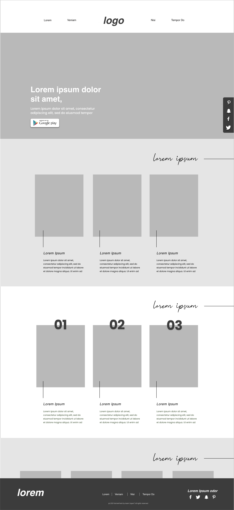
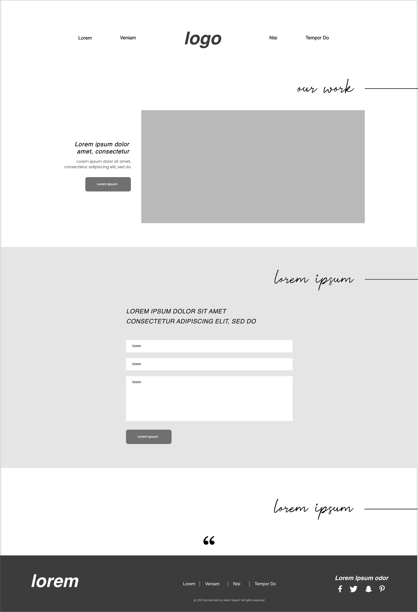
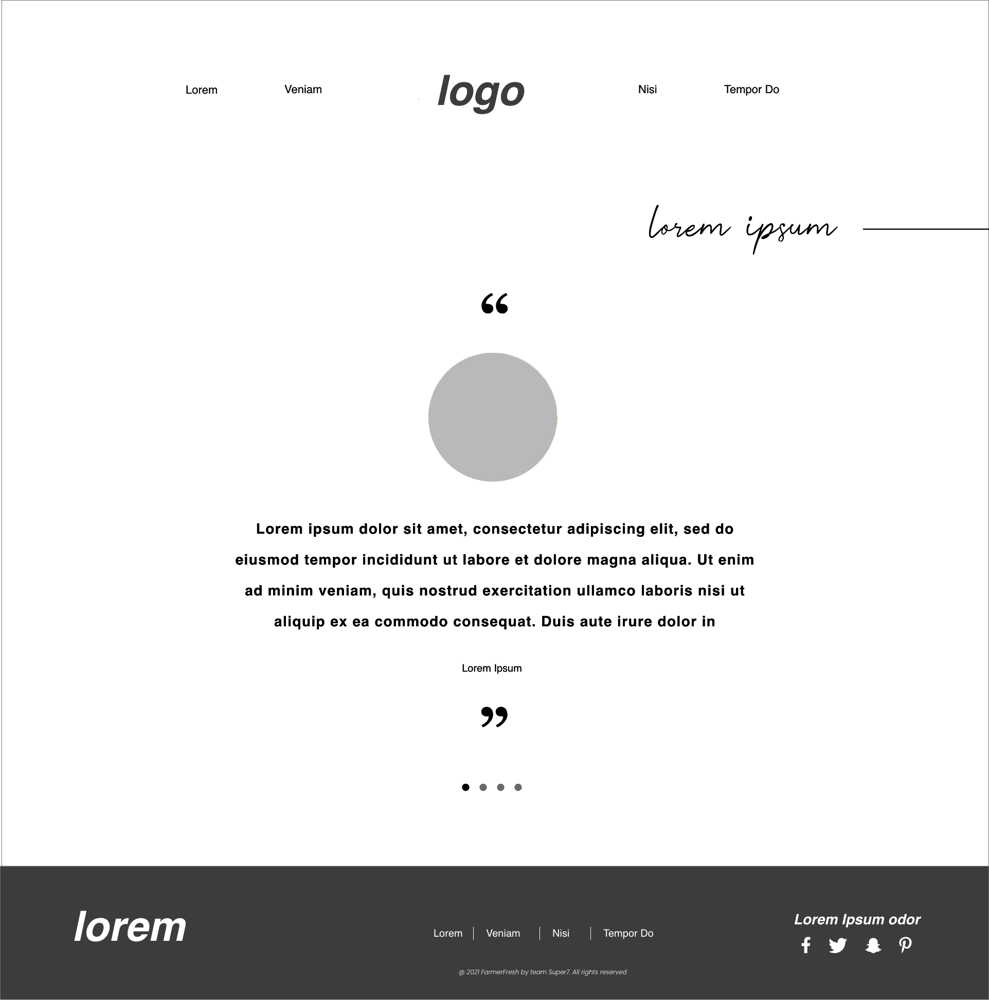
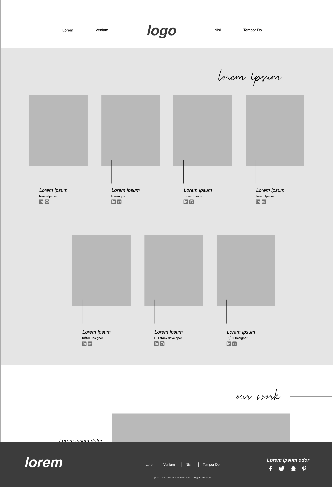
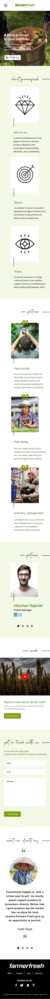

Farmerfresh
UI/UX DesignProblem
The research data shows that organic farmers of Vancouver face a lot of issues while selling their products. Less number of spots in local farmer market, transportation cost, price disparity, limited audience base.
Solution
FarmerFresh is a mobile application that acts as a virtual marketplace for certified organic farmers and organic food consumers to sell and buy the fresh organic produce from the convenience of their homes.
Wireframes




Mockups
Desktop Screen

Mobile Screen
